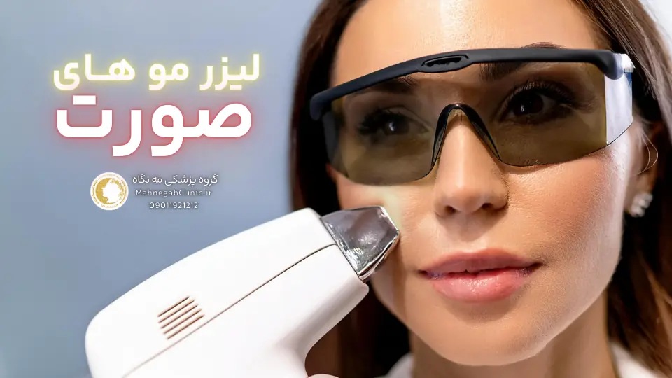
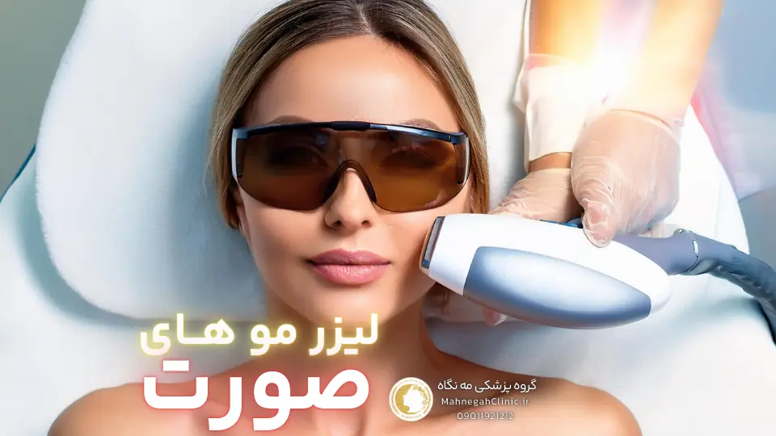
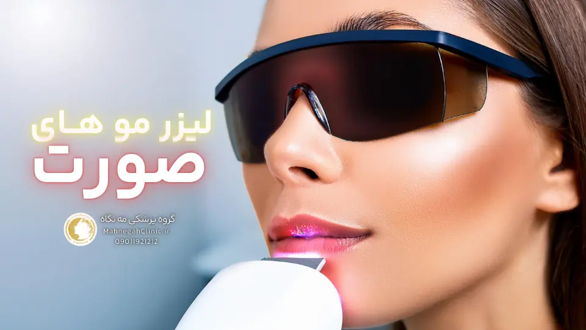
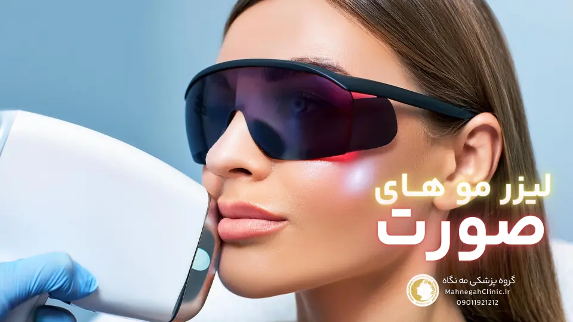
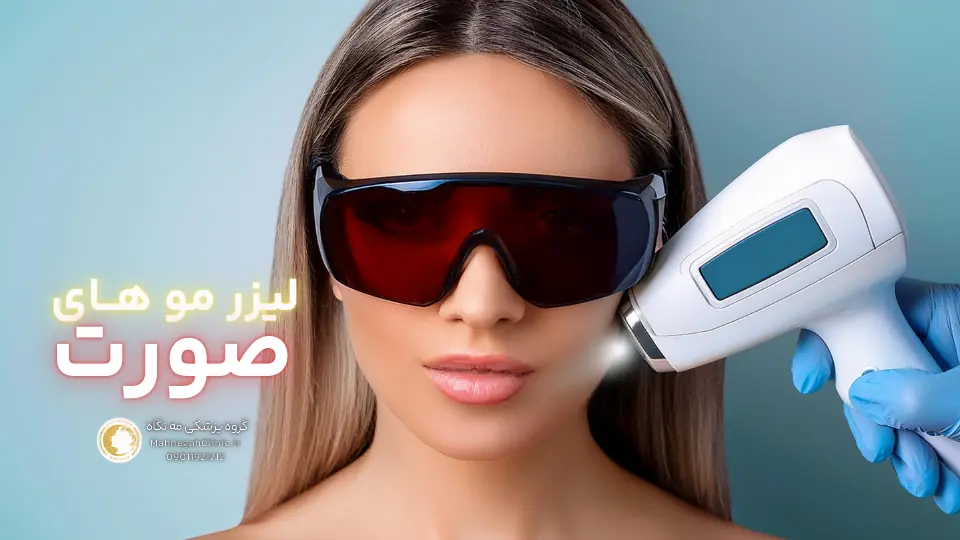
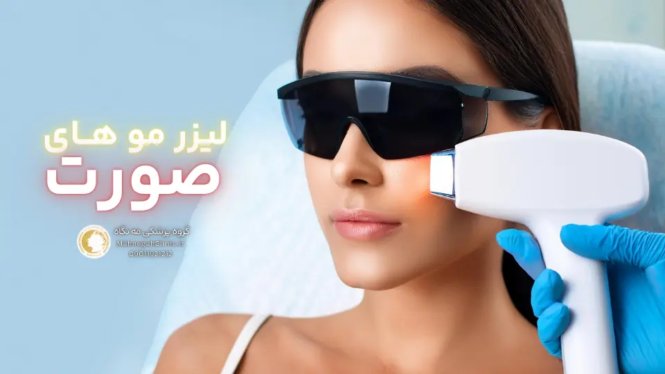

خانه / مجله / لیزر موهای زائد
لیزر موهای زائد صورت در سعادت آباد 😍 بدون دردسر

لیزر موهای زائد صورت در سعادت آباد: انتخابی هوشمندانه برای پوستی صاف و زیبا
لیزر موهای زائد صورت در سعادت آباد: در دنیای امروز، داشتن پوستی صاف و بدون موهای زائد، به یکی از دغدغههای اصلی افراد، به ویژه خانمها تبدیل شده است. روشهای سنتی مانند بند انداختن، اپیلاسیون و استفاده از موبر، علاوه بر درد و ناراحتی، اغلب نتایج موقتی دارند و نیاز به تکرار مداوم دارند. اما خوشبختانه، با پیشرفت تکنولوژی، روشهای جدید و موثرتری برای حذف موهای زائد به وجود آمدهاند که یکی از بهترین آنها، لیزر موهای زائد است.
همین اول کار بهت بگم که اگر فرم مشاوره رو پر کنی 10 درصد تخفیف روی تمام خدمات مه نگاه داری تازه وچر هم هدیه میگیری!
لیزر موهای زائد صورت، روشی ایمن، موثر و کمدرد برای از بین بردن موهای زائد صورت است. در این روش، از انرژی نور لیزر برای تخریب فولیکولهای مو استفاده میشود. فولیکولها، ساختارهایی در پوست هستند که مسئول رشد موها میباشند. با تخریب فولیکولها، رشد موها متوقف شده و پوستی صاف و بدون مو به دست میآید.
مزایای لیزر موهای زائد صورت
- دائمی بودن: لیزر موهای زائد، روشی دائمی برای حذف موهای زائد است و پس از چند جلسه، رشد موها به طور قابل توجهی کاهش مییابد و در برخی موارد، به طور کامل متوقف میشود.
- کاهش موهای زیرپوستی: لیزر، علاوه بر حذف موهای زائد، به کاهش موهای زیرپوستی نیز کمک میکند و باعث میشود پوست صافتر و شفافتر به نظر برسد.
- سرعت و سهولت: لیزر، روشی سریع و آسان است و هر جلسه درمانی، بسته به ناحیه تحت درمان، تنها چند دقیقه طول میکشد.
- درد کمتر: در مقایسه با روشهای سنتی مانند اپیلاسیون، لیزر درد بسیار کمتری دارد و در برخی موارد، حتی بدون درد است.
- ایمنی: لیزر، روشی ایمن است و در صورت انجام توسط پزشک متخصص و با استفاده از دستگاههای استاندارد، عوارض جانبی کمی دارد.
چرا سعادت آباد را برای لیزر موهای زائد انتخاب کنیم؟
سعادت آباد، یکی از مناطق شمال تهران است که به دلیل وجود مراکز زیبایی و کلینیکهای مجهز، به یکی از مقاصد اصلی برای انجام لیزر موهای زائد تبدیل شده است. در سعادت آباد، میتوانید از خدمات بهترین پزشکان متخصص و دستگاههای لیزر پیشرفته بهرهمند شوید و از نتایج عالی لیزر لذت ببرید. همچنین، دسترسی آسان به این منطقه و وجود امکانات رفاهی، از دیگر مزایای انجام لیزر در سعادت آباد هستند.
اگر به دنبال روشی موثر، ایمن و کمدرد برای حذف موهای زائد صورت هستید، لیزر موهای زائد صورت در سعادت آباد، انتخابی هوشمندانه است. با انتخاب این روش، میتوانید از پوستی صاف، زیبا و بدون موهای زائد لذت ببرید و اعتماد به نفس خود را افزایش دهید.
انواع لیزر موهای زائد صورت و انتخاب بهترین دستگاه
در دنیای پر زرق و برق لیزر موهای زائد، انتخاب دستگاه مناسب میتواند تفاوت چشمگیری در نتایج و رضایت شما ایجاد کند. هر دستگاه لیزر با ویژگیها و قابلیتهای خاص خود، برای انواع پوست و مو طراحی شده است. در این بخش، به معرفی سه نوع دستگاه لیزر پرکاربرد - الکساندرایت، دایود و ND:YAG - میپردازیم و نکاتی را برای انتخاب بهترین دستگاه با توجه به شرایط شما ارائه میدهیم.
دستگاههای لیزر الکساندرایت، دایود و ND:YAG
- لیزر الکساندرایت: این دستگاه با طول موج 755 نانومتر، برای پوستهای روشن و موهای تیره بسیار موثر است. لیزر الکساندرایت با سرعت بالا و دقت بالا، فولیکولهای مو را هدف قرار داده و آنها را تخریب میکند. با این حال، این دستگاه برای پوستهای تیره مناسب نیست و ممکن است باعث سوختگی یا تغییر رنگ پوست شود.
- لیزر دایود: این دستگاه با طول موج 810 نانومتر، برای انواع پوستها، از جمله پوستهای تیره، مناسب است. لیزر دایود با نفوذ عمیقتر به پوست، فولیکولهای مو را در لایههای عمیقتر هدف قرار میدهد و نتایج طولانیمدتتری ارائه میدهد. همچنین، این دستگاه درد کمتری نسبت به لیزر الکساندرایت دارد.
- لیزر ND:YAG: این دستگاه با طول موج 1064 نانومتر، برای انواع پوستها، به ویژه پوستهای تیره، بسیار ایمن و موثر است. لیزر ND:YAG با کمترین میزان جذب ملانین، خطر سوختگی یا تغییر رنگ پوست را به حداقل میرساند. همچنین، این دستگاه برای از بین بردن موهای نازک و کرکی نیز موثر است.
مشاوره با پزشک برای انتخاب بهترین دستگاه
انتخاب بهترین دستگاه لیزر برای لیزر موهای زائد صورت، به عوامل مختلفی مانند نوع پوست، رنگ مو، ضخامت مو و ناحیه تحت درمان بستگی دارد. بنابراین، قبل از انجام لیزر، حتماً با پزشک متخصص مشورت کنید. پزشک با بررسی شرایط شما و ارزیابی مزایا و معایب هر دستگاه، بهترین گزینه را برای شما پیشنهاد خواهد داد.
به یاد داشته باشید که انتخاب دستگاه مناسب، نقش مهمی در موفقیت لیزر موهای زائد دارد. با انتخاب دستگاهی که با شرایط پوست و موی شما سازگار است، میتوانید از نتایج بهینه و رضایتبخش لیزر لذت ببرید و به پوستی صاف و زیبا دست یابید.

مراحل لیزر موهای زائد صورت در سعادت آباد
تصمیم به انجام لیزر موهای زائد در سعادت آباد گرفتهاید؟ عالی است! اما قبل از شروع، بهتر است با مراحل انجام این فرآیند آشنا شوید. در این بخش، به طور کامل مراحل لیزر موهای زائد صورت را شرح میدهیم تا با آمادگی کامل و اطلاعات کافی، برای این تجربه آماده شوید.
آمادهسازی قبل از لیزر
- مشاوره با پزشک: اولین و مهمترین مرحله، مشاوره با پزشک متخصص است. در این جلسه، پزشک پوست شما را معاینه کرده و در مورد سوابق پزشکی، داروهای مصرفی و حساسیتهای احتمالی شما سوال میکند. همچنین، پزشک در مورد انتظارات شما از لیزر و نتایج احتمالی آن با شما صحبت خواهد کرد.
- اصلاح موهای زائد: قبل از لیزر، موهای زائد ناحیه مورد نظر را با تیغ اصلاح کنید. این کار باعث میشود انرژی لیزر به طور مستقیم به فولیکولهای مو برسد و اثربخشی درمان افزایش یابد.
- پرهیز از آفتاب: حداقل دو هفته قبل از لیزر، از قرار گرفتن در معرض نور خورشید و استفاده از سولاریوم خودداری کنید. آفتاب سوختگی میتواند پوست را حساس کرده و خطر عوارض جانبی لیزر را افزایش دهد.
- قطع مصرف برخی داروها: برخی داروها مانند رتینوئیدها و آنتیبیوتیکها میتوانند پوست را حساس کنند. در صورت مصرف هرگونه دارو، حتماً پزشک را مطلع کنید.
فرآیند لیزر و مراقبتهای پس از آن
- تمیز کردن و ضدعفونی کردن پوست: قبل از شروع لیزر، پوست ناحیه مورد نظر تمیز و ضدعفونی میشود.
- استفاده از ژل خنککننده: برای کاهش درد و محافظت از پوست، از ژل خنککننده استفاده میشود.
- شروع لیزر: پزشک با استفاده از دستگاه لیزر، پالسهای نور را به پوست میتاباند. این پالسها توسط ملانین موجود در فولیکولهای مو جذب شده و باعث تخریب آنها میشوند.
- استفاده از کرم تسکیندهنده: پس از لیزر، از کرم تسکیندهنده برای کاهش قرمزی و التهاب پوست استفاده میشود.
- مراقبتهای پس از لیزر: پس از لیزر، از قرار گرفتن در معرض نور خورشید خودداری کنید و از کرم ضد آفتاب با SPF بالا استفاده کنید. همچنین، از خاراندن یا کندن پوست ناحیه لیزر شده خودداری کنید.
با رعایت این نکات ساده، میتوانید از یک تجربه لیزر موهای زائد راحت و بدون درد در سعادت آباد لذت ببرید و به پوستی صاف و زیبا دست یابید.

عوارض لیزر موهای زائد صورت و راههای کاهش آنها
اگرچه لیزر موهای زائد صورت یک روش ایمن و موثر است، اما مانند هر روش دیگری، ممکن است با عوارضی همراه باشد. در این بخش، به بررسی عوارض شایع و نادر لیزر موهای زائد صورت میپردازیم و راهکارهایی را برای کاهش این عوارض ارائه میدهیم.
عوارض شایع و نادر لیزر
- قرمزی و التهاب: این عارضه شایعترین عارضه لیزر است و معمولاً چند ساعت تا چند روز پس از درمان برطرف میشود. استفاده از کمپرس سرد و کرمهای تسکیندهنده میتواند به کاهش قرمزی و التهاب کمک کند.
- تورم: تورم خفیف در ناحیه لیزر شده نیز شایع است و معمولاً ظرف چند روز بهبود مییابد.
- سوزش و خارش: برخی افراد ممکن است پس از لیزر، احساس سوزش یا خارش در ناحیه تحت درمان داشته باشند. این عارضه معمولاً خفیف است و با استفاده از کرمهای تسکیندهنده برطرف میشود.
- تغییر رنگ پوست: در موارد نادر، لیزر ممکن است باعث تغییر رنگ پوست شود. این عارضه بیشتر در افرادی با پوست تیره رخ میدهد و معمولاً موقتی است.
- سوختگی: سوختگی پوست نیز یکی از عوارض نادر لیزر است و در صورت استفاده از دستگاههای نامناسب یا عدم تنظیم صحیح آنها رخ میدهد. انتخاب یک مرکز معتبر و پزشک متخصص میتواند خطر سوختگی را به حداقل برساند.
- عفونت: در موارد بسیار نادر، ممکن است عفونت در ناحیه لیزر شده رخ دهد. رعایت بهداشت و مراقبتهای پس از لیزر میتواند از بروز عفونت جلوگیری کند.
نکات مهم برای به حداقل رساندن عوارض
- انتخاب مرکز معتبر و پزشک متخصص: انتخاب یک مرکز لیزر معتبر با پزشکان متخصص و با تجربه، اهمیت زیادی دارد. اطمینان حاصل کنید که مرکز از دستگاههای استاندارد و با کیفیت استفاده میکند و پزشک قبل از شروع درمان، پوست شما را معاینه کرده و در مورد سوابق پزشکی شما سوال میکند.
- رعایت مراقبتهای قبل و بعد از لیزر: پیروی از دستورالعملهای پزشک در مورد آمادهسازی قبل از لیزر و مراقبتهای پس از آن، میتواند به کاهش عوارض و بهبود نتایج کمک کند.
- آگاهی از عوارض احتمالی: قبل از انجام لیزر، در مورد عوارض احتمالی آن با پزشک خود صحبت کنید و در صورت بروز هرگونه عارضه، فوراً به پزشک مراجعه کنید.
با رعایت این نکات و انتخاب یک مرکز معتبر، میتوانید لیزر موهای زائد صورت را با کمترین عوارض و بهترین نتایج تجربه کنید و از پوستی صاف و زیبا لذت ببرید.

لیزر موهای زائد صورت برای آقایان در سعادت آباد
در گذشته، لیزر موهای زائد عمدتاً به عنوان یک روش زیبایی زنانه شناخته میشد. اما امروزه، آقایان نیز به دنبال راههایی برای داشتن پوستی صاف و بدون موهای زائد هستند. در این بخش، به بررسی لیزر موهای زائد صورت برای آقایان میپردازیم و مزایا و مناطق قابل لیزر را برای آنها شرح میدهیم.
آیا لیزر برای آقایان مناسب است؟
بله، لیزر موهای زائد برای آقایان نیز کاملاً مناسب و موثر است. در واقع، بسیاری از آقایان به دلایل مختلفی از جمله زیبایی، بهداشت، راحتی و افزایش اعتماد به نفس، به لیزر موهای زائد روی میآورند. لیزر میتواند به آقایان کمک کند تا از شر موهای زائد در نواحی مختلف صورت مانند ریش، سبیل، گردن، پشت گردن، گوشها و بینی خلاص شوند و پوستی صاف و مرتب داشته باشند.
مناطق قابل لیزر برای آقایان
- ریش و سبیل: بسیاری از آقایان از اصلاح روزانه ریش و سبیل خسته میشوند و به دنبال یک راه حل دائمی هستند. لیزر میتواند به آنها کمک کند تا از شر موهای زائد این نواحی خلاص شوند و زمان و انرژی خود را برای کارهای مهمتری صرف کنند.
- گردن و پشت گردن: موهای زائد در این نواحی میتوانند باعث ایجاد ظاهری نامرتب و ناخوشایند شوند. لیزر میتواند به آقایان کمک کند تا پوستی صاف و یکدست در این مناطق داشته باشند.
- گوشها و بینی: موهای زائد در گوشها و بینی میتوانند باعث ایجاد خجالت و کاهش اعتماد به نفس شوند. لیزر میتواند به آقایان کمک کند تا از شر این موهای زائد خلاص شوند و احساس بهتری نسبت به خود داشته باشند.
- ابروها: برخی آقایان ممکن است بخواهند ابروهای خود را مرتب کنند و از شر موهای زائد اطراف آنها خلاص شوند. لیزر میتواند به آنها کمک کند تا به ابروهایی خوش فرم و مرتب دست یابند.
اگر شما هم به عنوان یک آقا به دنبال راهی برای حذف موهای زائد صورت خود هستید، لیزر موهای زائد صورت در سعادت آباد میتواند یک گزینه عالی برای شما باشد. با انتخاب یک مرکز معتبر و پزشک متخصص، میتوانید از نتایج عالی لیزر لذت ببرید و به پوستی صاف و مرتب دست یابید.

هزینه لیزر موهای زائد صورت در سعادت آباد
یکی از سوالات رایج افرادی که به دنبال لیزر موهای زائد هستند، هزینه این روش است. در این بخش، به بررسی عوامل موثر بر هزینه لیزر موهای زائد صورت در سعادت آباد میپردازیم و نکاتی را برای کاهش هزینهها ارائه میدهیم.
برای دریافت لیست قیمت لیزر اینجا کلیک کن
عوامل مؤثر بر هزینه لیزر
- ناحیه تحت درمان: هزینه لیزر به وسعت ناحیه تحت درمان بستگی دارد. به عنوان مثال، لیزر کل صورت هزینه بیشتری نسبت به لیزر بالای لب یا چانه دارد.
- تعداد جلسات: تعداد جلسات مورد نیاز برای دستیابی به نتایج مطلوب، به عوامل مختلفی مانند ضخامت و رنگ مو، نوع پوست و ناحیه تحت درمان بستگی دارد. به طور کلی، برای حذف کامل موهای زائد، به چندین جلسه لیزر نیاز است.
- نوع دستگاه لیزر: دستگاههای لیزر مختلف، قیمتهای متفاوتی دارند. دستگاههای جدیدتر و پیشرفتهتر، معمولاً هزینه بیشتری دارند.
- تجربه و تخصص پزشک: هزینه لیزر توسط پزشکان متخصص و با تجربه، ممکن است بیشتر از پزشکان تازه کار باشد.
- موقعیت جغرافیایی: هزینه لیزر در مناطق مختلف شهر، متفاوت است. به عنوان مثال، هزینه لیزر در سعادت آباد، ممکن است کمی بیشتر از سایر مناطق تهران باشد.
تخفیفها و پیشنهادهای ویژه
بسیاری از مراکز لیزر در سعادت آباد، تخفیفها و پیشنهادهای ویژهای را برای لیزر موهای زائد ارائه میدهند. میتوانید با جستجو در اینترنت یا تماس با مراکز مختلف، از این تخفیفها مطلع شوید و هزینه لیزر را کاهش دهید. همچنین، برخی مراکز برای لیزر چند ناحیه به طور همزمان، تخفیفهای ویژهای در نظر میگیرند.
به یاد داشته باشید که هزینه لیزر موهای زائد صورت، یک سرمایهگذاری بلندمدت برای زیبایی و اعتماد به نفس شماست. با انتخاب یک مرکز معتبر و پزشک متخصص، میتوانید از نتایج عالی و ماندگار لیزر لذت ببرید و در هزینههای خود صرفهجویی کنید.

انتخاب بهترین مرکز لیزر موهای زائد در سعادت آباد
با وجود تعدد مراکز لیزر در سعادت آباد، انتخاب بهترین مرکز میتواند چالشبرانگیز باشد. در این بخش، معیارهای مهم برای انتخاب یک مرکز معتبر و پرسشهای کلیدی که باید قبل از انتخاب از مرکز بپرسید را بررسی میکنیم تا بتوانید با اطمینان خاطر، بهترین مرکز را برای لیزر موهای زائد صورت خود انتخاب کنید.
معیارهای انتخاب مرکز معتبر
- مجوزها و استانداردهای بهداشتی: اطمینان حاصل کنید که مرکز دارای مجوزهای لازم از وزارت بهداشت و درمان است و استانداردهای بهداشتی را رعایت میکند. این موضوع تضمین میکند که درمان شما در یک محیط ایمن و بهداشتی انجام میشود.
- تجهیزات و فناوری بهروز: یک مرکز معتبر باید از دستگاههای لیزر پیشرفته و بهروز استفاده کند. تکنولوژیهای جدیدتر، معمولاً اثربخشی و ایمنی بیشتری دارند و عوارض جانبی کمتری ایجاد میکنند.
- تخصص و تجربه پزشکان و کارکنان: پزشکان و اپراتورهای لیزر باید دارای تخصص و تجربه کافی در زمینه لیزر موهای زائد باشند. میتوانید در مورد تحصیلات، مدارک و سوابق کاری آنها سوال کنید و نمونه کارهایشان را مشاهده کنید.
- نظرات و تجربیات مراجعهکنندگان: بررسی نظرات و تجربیات مراجعهکنندگان قبلی میتواند به شما در ارزیابی کیفیت خدمات مرکز کمک کند. میتوانید به وبسایت مرکز، صفحات اجتماعی یا سایتهای نظرسنجی مراجعه کنید و نظرات دیگران را بخوانید.
- مشاوره رایگان: یک مرکز معتبر باید مشاوره رایگان قبل از درمان ارائه دهد. در این جلسه، میتوانید سوالات خود را بپرسید، انتظارات خود را بیان کنید و در مورد جزئیات درمان و هزینهها اطلاعات کسب کنید.
- قیمت مناسب و شفاف: هزینه لیزر باید شفاف و منطقی باشد. از مرکز بخواهید جزئیات هزینهها را به شما توضیح دهد و در صورت وجود تخفیفها یا پیشنهادهای ویژه، از آنها مطلع شوید.
پرسشهای مهم قبل از انتخاب مرکز
- آیا مرکز دارای مجوزهای لازم است؟
- از چه نوع دستگاه لیزری استفاده میشود؟
- پزشکان و اپراتورهای لیزر چه تخصص و تجربهای دارند؟
- آیا مشاوره رایگان قبل از درمان ارائه میشود؟
- هزینه لیزر چقدر است و شامل چه مواردی میشود؟
- آیا تخفیف یا پیشنهاد ویژهای وجود دارد؟
- آیا مرکز ضمانت بازگشت وجه یا جلسات رایگان تکمیلی ارائه میدهد؟
با در نظر گرفتن این معیارها و پرسیدن سوالات مناسب، میتوانید بهترین مرکز لیزر موهای زائد صورت در سعادت آباد را انتخاب کنید و از یک تجربه ایمن، موثر و رضایتبخش لذت ببرید.

لیزر موهای زائد صورت: تجربهای متفاوت در سعادت آباد
تصمیم به انجام لیزر موهای زائد، یک تصمیم شخصی و مهم است. در این مسیر، شنیدن نظرات و تجربیات دیگران میتواند به شما کمک کند تا با اطمینان بیشتری قدم بردارید. در این بخش، به برخی از نظرات و تجربیات مراجعهکنندگان به مراکز لیزر موهای زائد در سعادت آباد میپردازیم و میزان رضایت آنها را بررسی میکنیم.
نظرات و تجربیات مراجعهکنندگان
- "نتایج فوقالعاده و درد بسیار کم": بسیاری از مراجعهکنندگان از نتایج لیزر موهای زائد صورت در سعادت آباد ابراز رضایت کردهاند و آن را روشی موثر و کمدرد برای حذف موهای زائد میدانند. آنها میگویند که پس از چند جلسه، رشد موهای زائد به طور قابل توجهی کاهش یافته و پوستشان صاف و شفاف شده است.
- "پزشکان متخصص و کارکنان حرفهای": مراجعهکنندگان از تخصص و مهارت پزشکان و کارکنان مراکز لیزر در سعادت آباد تعریف میکنند و میگویند که آنها با صبر و حوصله به سوالاتشان پاسخ دادهاند و آنها را در طول درمان همراهی کردهاند.
- "دستگاههای پیشرفته و محیط بهداشتی": بسیاری از مراجعهکنندگان از استفاده از دستگاههای لیزر پیشرفته و محیط بهداشتی و آرام مراکز لیزر در سعادت آباد ابراز رضایت کردهاند. آنها میگویند که این عوامل باعث شده تا احساس راحتی و امنیت بیشتری در طول درمان داشته باشند.
- "دسترسی آسان و امکانات رفاهی": مراجعهکنندگان از دسترسی آسان به مراکز لیزر در سعادت آباد و وجود امکانات رفاهی مانند پارکینگ، کافیشاپ و ... ابراز رضایت کردهاند. آنها میگویند که این عوامل باعث شده تا تجربه لیزر برایشان راحتتر و لذتبخشتر باشد.
رضایت مشتریان از لیزر در سعادت آباد
به طور کلی، میزان رضایت مشتریان از لیزر موهای زائد صورت در سعادت آباد بسیار بالا است. بسیاری از آنها این روش را به دوستان و آشنایان خود توصیه میکنند و میگویند که لیزر، زندگی آنها را تغییر داده و اعتماد به نفس آنها را افزایش داده است.
اگر شما هم به دنبال یک روش موثر، ایمن و کمدرد برای حذف موهای زائد صورت هستید، لیزر موهای زائد در سعادت آباد میتواند یک گزینه عالی برای شما باشد. با انتخاب یک مرکز معتبر و پزشک متخصص، میتوانید از تجربهای متفاوت و رضایتبخش لذت ببرید و به پوستی صاف، زیبا و بدون موهای زائد دست یابید.

پرسشهای متداول درباره لیزر موهای زائد صورت در سعادت آباد
لیزر موهای زائد صورت معمولاً درد کمی دارد و بسیاری از افراد آن را به صورت سوزش خفیف یا گزگز توصیف میکنند.
تعداد جلسات مورد نیاز به عوامل مختلفی مانند ضخامت و رنگ مو، نوع پوست، ناحیه تحت درمان و دستگاه لیزر مورد استفاده بستگی دارد. به طور کلی، برای دستیابی به نتایج مطلوب، به 6 تا 8 جلسه لیزر با فواصل 4 تا 6 هفته نیاز است.
لیزر موهای زائد صورت معمولاً عوارض جانبی کمی دارد و در صورت انجام توسط پزشک متخصص و با استفاده از دستگاههای استاندارد، ایمن است.
لیزر موهای زائد صورت برای اکثر افراد مناسب است، اما برخی افراد ممکن است کاندیدای مناسبی برای این روش نباشند. به عنوان مثال، افرادی که باردار هستند، بیماریهای پوستی خاصی دارند یا داروهای خاصی مصرف میکنند، باید قبل از انجام لیزر با پزشک خود مشورت کنند.
لیزر موهای زائد صورت میتواند نتایج طولانیمدت و در برخی موارد، دائمی داشته باشد. با این حال، برای حفظ نتایج، ممکن است نیاز به جلسات تکمیلی سالیانه یا دوسالانه باشد. همچنین، عوامل هورمونی و ژنتیکی میتوانند بر رشد مجدد موها تأثیر بگذارند.